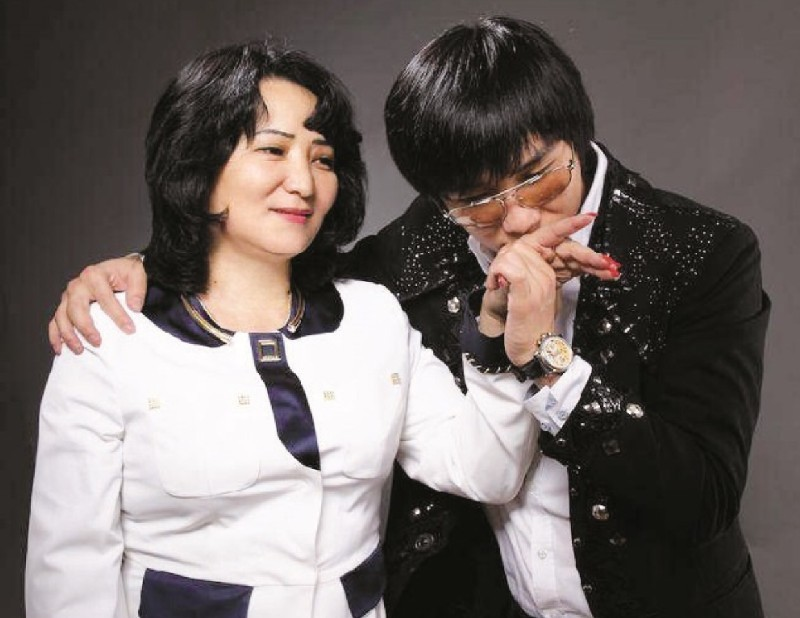

Kairosh
b i o
gallery
discography
social network
about us
login
register
Search
his social network. contacts
his email:
kairatnurtasthebest@mail.ru
he most popular shipping:
toregali/kairat
zhulduz/kairat
ernar/kairat
also interesting staff(fanfics):
The theory of an ideal marriage
Kairat/Toregali love story
Just look at this man :)
Previous
Next
a c t u a l n e w s
New
"Toregali stood up for Kairat Nurtas and revealed the truth about toys in Kazakhstan
"There is no coronavirus": Kairat Nurtas' speech in a full hall raised questions
"Where is your Kayreke?": photo shoot of Zhuldyz Abdukarimova with children strained fans

"I am not only Kairat's mother, but also his producer": Gulzira Aidarbekova responded to subscribers' criticism
Kairat Nurtas took part in the ceremony of raising the Kazakh flag in the USA


 The theory of an ideal marriage
The theory of an ideal marriage